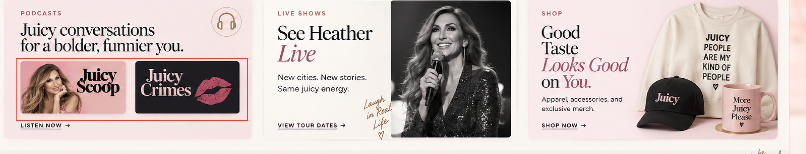

Podcasts
Comedian · Podcast host · Author
Fresh stories.
Sharp takes.
Laugh-out-loud
fun.
Pop culture, candid conversations and comedy with Heather McDonald. Get the scoop, catch a live show and keep the laughs coming.
Comedy, pop culture
Listen now
